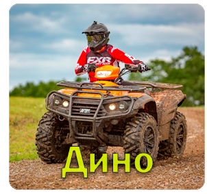

Дино

189.000 рублей
Квадроцикл "Дино" - это компактное и маневренное средство передвижения,
спроектированное для активных приключений и развлечений на природе.
Этот четырёхколесный транспорт объединяет в себе стильный дизайн, надежность
и множество возможностей для развлечений на свежем воздухе.
Основные характеристики квадроцикла "Дино":
Компактный размер: "Дино" обладает компактными размерами, что делает его легким
в управлении и удобным для передвижения по ограниченным пространствам.
Двигатель средней мощности: Этот квадроцикл оснащен двигателем средней мощности,
который обеспечивает надежную производительность и хорошую маневренность.
Проходимость: "Дино" способен преодолевать разнообразные типы местности,
включая лесные тропы, песчаные дюны и горные дороги.
Удобство и стиль: С комфортабельным сиденьем и стильным дизайном, "Дино"
предлагает приятное и эстетичное вождение.
Многофункциональность: Этот квадроцикл может использоваться для различных активностей
на природе, таких как кемпинг, путешествия и просто для приятного времяпрепровождения.
Современные особенности: "Дино" может быть оснащен современными технологическими особенностями,
такими как навигационная система или система безопасности.
Квадроцикл "Дино" - отличный выбор для тех, кто ищет средство передвижения для развлечений на свежем воздухе с комбинацией стиля и функциональности.